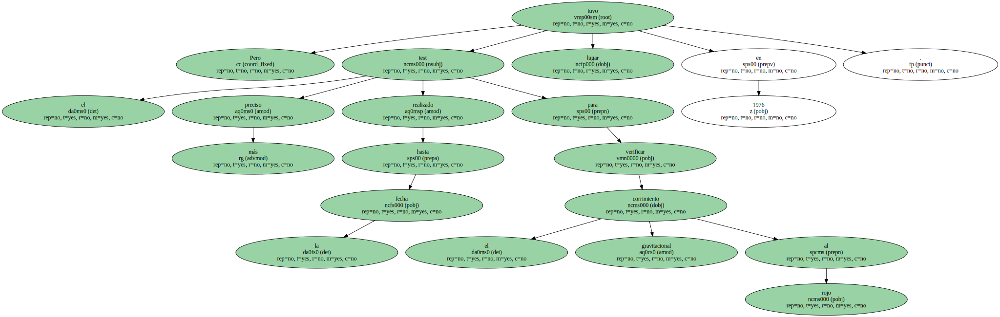
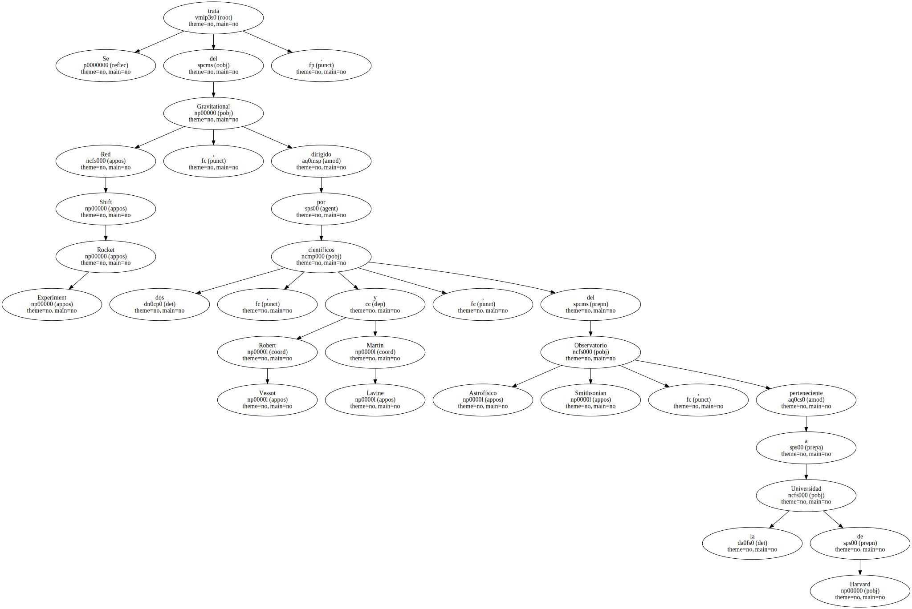
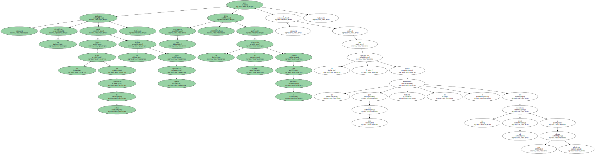
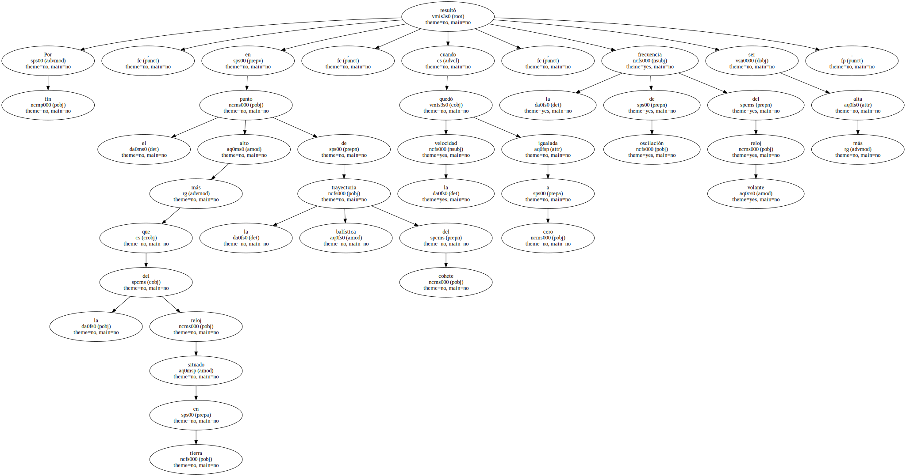
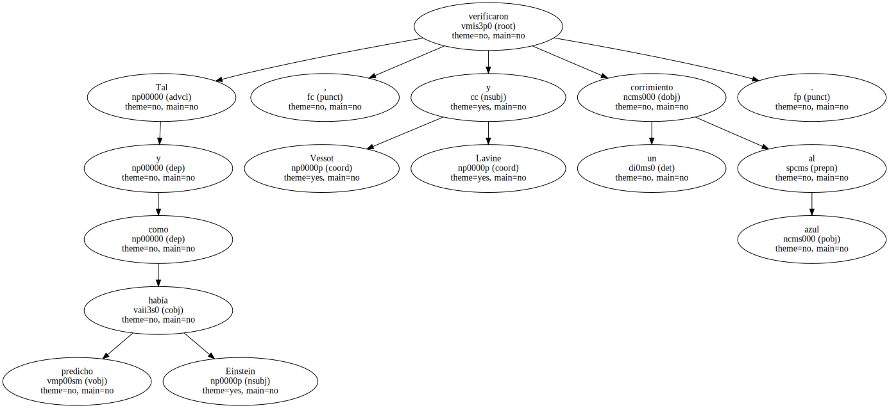
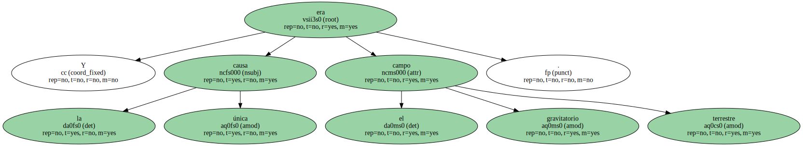
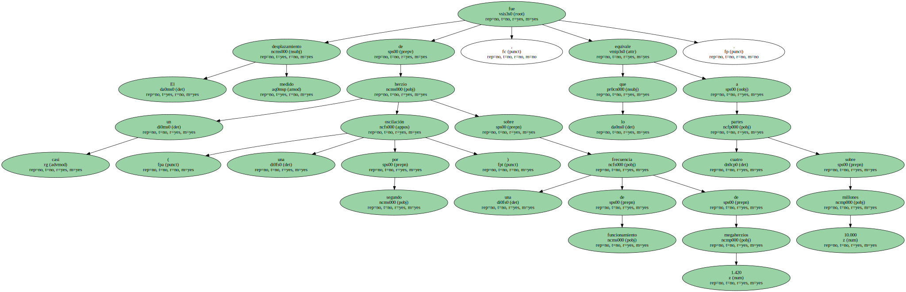

Pero el test más preciso realizado hasta la fecha para verificar el corrimiento gravitacional al rojo tuvo lugar en 1976.
Se trata del Gravitational Red Shift Rocket Experiment , dirigido por dos científicos , Robert Vessot y Martin Lavine , del Observatorio Astrofísico Smithsonian , perteneciente a la Universidad de Harvard.
La idea consistía en lanzar , con un cohete Scout-D , un reloj máser de hidrógeno , por aquel entonces el más exacto del mundo , a 10.000 kilómetros de altura , con objeto de comparar por telemetría su frecuencia de oscilación con la de otro reloj idéntico situado en tierra.

Durante la etapa de aceleración del cohete , los científicos pudieron medir un desfase entre ambas frecuencias , pero este corrimiento se debía a la dilatación del tiempo causada por la velocidad , y no por la gravitación , efecto que por otro lado todavía no se manifestaba por no encontrarse el reloj a una altura suficiente.
Por fin , en el punto más alto de la trayectoria balística del cohete , cuando la velocidad quedó igualada a cero , la frecuencia de oscilación del reloj volante resultó ser más alta que la del reloj situado en tierra.
Tal y como había predicho Einstein , Vessot y Lavine verificaron un corrimiento al azul.
Y la única causa era el campo gravitatorio terrestre.
El desplazamiento medido fue de casi un herzio ( una oscilación por segundo ) sobre una frecuencia de funcionamiento de 1.420 megaherzios , lo que equivale a cuatro partes sobre 10.000 millones.
